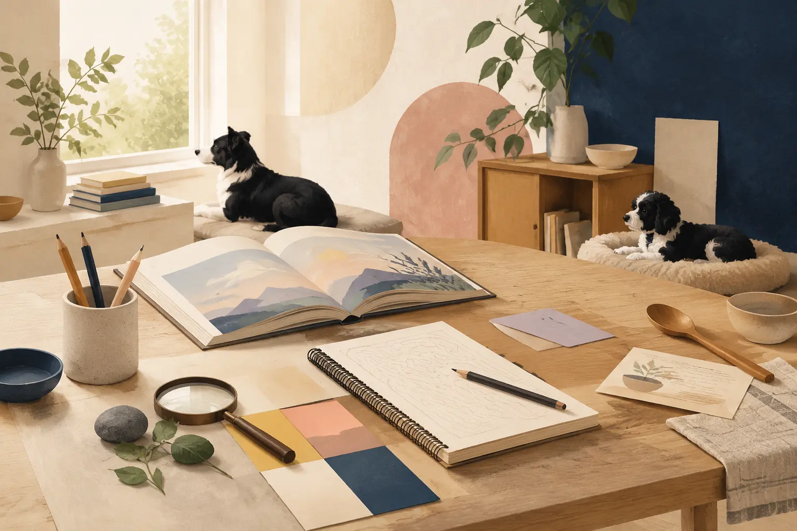

Edels Verden · læringsunivers
Ett sted for historier og skoletemaer
Språkøvelser, fortellinger og temaer fra skolen – samlet på ett sted.
23aktiviteter
totalt
totalt
Velg område
Les, lytt og bygg setninger gjennom fortellinger.
→
Biologisk mangfold, bergart, leirskole og nye temaer fra undervisningen.
→
Lag mat med ordene vi kan fra skolen.
→